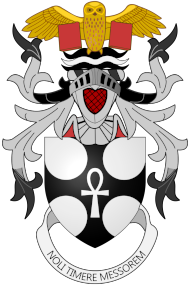

Biography
Who is...
Sir Terence David John Pratchett (28 April 1948 – 12 March 2015) was an English humourist, satirist, and author of fantasy novels, especially comical works.
He is best known for his Discworld series of 41 novels.
With more than 85 million books sold worldwide in 37 languages, Pratchett was the UK's best-selling author of the 1990s.
He was appointed Officer of the Order of the British Empire (OBE) in 1998 and was knighted for services to literature in the 2009 New Year Honours.
Early life.
Pratchett was born on 28 April 19 in Beaconsfield in Buckinghamshire, England, the only child of David (1921–2006), a mechanic, and Eileen Pratchett (1922–2010), a secretary, of Hay-on-Wye.
His maternal grandparents came from Ireland. Pratchett attended Holtspur School, where he was bullied for his speech impediments.
He was bothered by the head teacher, who, he said, thought "he could tell how successful you were going to be in later life by how well you could read or write at the age of six".
Pratchett's family moved to Bridgwater, Somerset, briefly in 1957.
He passed his eleven plus exam in 1959, earning a place at High Wycombe Technical High School, where he was a key member of the debating society and wrote stories for the school magazine.
Pratchett described himself as a "non-descript" student and, in his Who's Who entry, credited his education to the Beaconsfield Public Library.
Pratchett's early interests included astronomy. He collected Brooke Bond tea cards about space, owned a telescope and wanted to be an astronomer, but lacked the necessary mathematical skills.
He developed an interest in science fiction and attended science fiction conventions from about 1963–1964, but stopped a few years later when he got his first job as a trainee journalist at the local paper.
His early reading included the works of H. G. Wells, Arthur Conan Doyle, and "every book you really ought to read", which he later regarded as "getting an education".
Pratchett earned five O-levels and started A-level courses in Art, English and History.
His initial career choice was journalism and he left school at 17, in 1965, to start an apprenticeship with Arthur Church, the editor of the Bucks Free Press.
In this position he wrote, among other things, over 80 stories for the Children's Circle section under the name Uncle Jim.
Two of the stories contain characters found in his novel The Carpet People (1971).
While on day release from his apprenticeship, Pratchett finished his A-Level in English and took the National Council for the Training of Journalists proficiency course.
Career
In 1968, Pratchett interviewed Peter Bander van Duren, co-director of a small publishing company, Colin Smythe Ltd.
Pratchett mentioned he had written a manuscript, The Carpet People.
Colin Smythe Ltd published the book in 1971, with illustrations by Pratchett.
It received strong, although few, reviews and was followed by the science fiction novels The Dark Side of the Sun (10 May 1976) and Strata (15 June 1981).
After various positions in journalism, in 1980 Pratchett became Press Officer for the Central Electricity Generating Board (CEGB) in an area that covered four nuclear power stations.
He later joked that he had demonstrated "impeccable timing" by making this career change so soon after the Three Mile Island nuclear accident in Pennsylvania, US, and said he would "write a book about my experiences, if I thought anyone would believe it".
The first Discworld novel, The Colour of Magic, was published in hardback by Colin Smythe Ltd in 1983.
The paperback edition was published by Corgi, an imprint of Transworld, in 1985.
Pratchett's popularity increased when the BBC's Woman's Hour broadcast The Colour of Magic as a serial in six parts, and later Equal Rites.
Subsequently, the hardback rights were taken by the publishing house Victor Gollancz Ltd, which remained Pratchett's publisher until 1997, Colin Smythe having become Pratchett's agent.
Pratchett was the first fantasy author published by Gollancz.
Pratchett gave up working for the CEGB to make his living through writing in 1987, after finishing the fourth Discworld novel, Mort.
His sales increased quickly and many of his books occupied top places on the best-seller list; he was the UK's best-selling author of the 1990s.
According to The Times, Pratchett was the top-selling and highest earning UK author in 1996.
Some of his books have been published by Doubleday, another Transworld imprint. In the US, Pratchett is published by HarperCollins.
According to the Bookseller's Pocket Yearbook (2005), in 2003 Pratchett's UK sales amounted to 3.4% of the fiction market by hardback sales and 3.8% by value,
putting him in second place behind J. K. Rowling (6% and 5.6%, respectively), while in the paperback sales list Pratchett came 5th with 1.2% and 1.3% by value (behind James Patterson (1.9% and 1.7%), Alexander McCall Smith, John Grisham, and J. R. R. Tolkien).
He has UK sales of more than 2.5 million copies a year. His 2011 Discworld novel Snuff became the third-fastest-selling hardback adult-readership novel since records began in the UK, selling 55,000 copies in the first three days.
Writing
Pratchett said that to write, you must read extensively, both inside and outside your chosen genre and to the point of "overflow".
He advised that writing is hard work, and that writers must "make grammar, punctuation and spelling a part of your life."
However, Pratchett enjoyed writing, regarding its monetary rewards as "an unavoidable consequence" rather than the reason for writing.
Although during his early career he wrote for the sci-fi and horror genres, Pratchett later focused almost entirely on fantasy, and said: "It is easier to bend the universe around the story."
In the acceptance speech for his Carnegie Medal, he said: "Fantasy isn't just about wizards and silly wands.
It's about seeing the world from new directions", pointing to the Harry Potter novels and The Lord of the Rings.
In the same speech, he acknowledged benefits of these works for the genre.
Pratchett believed he owed "a debt to the science fiction/fantasy genre which he grew up out of" and disliked the term "magical realism" which, he said, is "like a polite way of saying you write fantasy and is more acceptable to certain people".
He expressed annoyance that fantasy is "unregarded as a literary form", arguing that it "is the oldest form of fiction"; he said he was infuriated when novels containing science fiction or fantasy ideas were not regarded as part of those genres.
He debated this issue with novelist A. S. Byatt and critic Terry Eagleton, arguing that fantasy is fundamental to the way we understand the world and therefore an integral aspect of all fiction.
Pratchett is known for a distinctive writing style that included a number of characteristic hallmarks.
One example is his use of footnotes, which usually involve a comic departure from the narrative or a commentary on the narrative, and occasionally have footnotes of their own.
Coat of Arms.
Terry Pratchett's arms were designed by Hubert Chesshyre and granted by Letters Patent of Garter and Clarenceux Kings of Arms dated 28 April 2010.
Upon a Helm with a Wreath Argent and Sable on Water Barry wavy Sable Argent and Sable an Owl affronty wings displayed and inverted Or supporting thereby two closed Books erect Gules.
The coat of arms contains an Escutcheon: a sable an ankh between four Roundels in saltire each issuing Argent.
It's motto is Noli Timere Messorem which means: Don't fear the reaper.
The symbolism of the coat of arms: The owl is a morepork, which taken together with the ankh is a clear reference to the city of Ankh-Morpork.
The image of a morpork holding an ankh appears in the fictional Ankh-Morpork City Arms. The motto "Noli Timere Messorem" is a corrected version of the dog Latin "Non Timetis Messor", the motto of Death's son-in-law and former apprentice, Mort of Sto Helit and his heirs.
The phrase is a reference to the song "(Don't Fear) The Reaper" by Blue Öyster Cult.